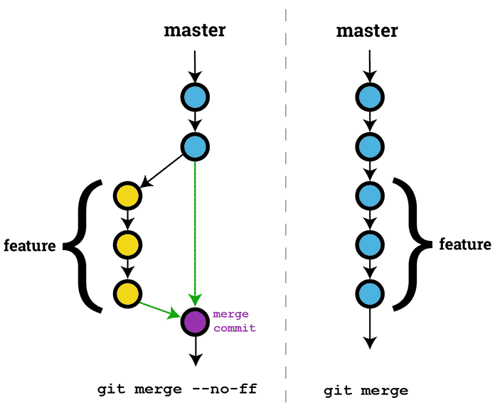

Managing code with git
Managing code with Git

Git
DVCS
multiplatform
open source and free (as a beer)
Everything starts with a
git init
(or a git clone)
Basic stuff
add
commit
checkout
reset
merge
Let's talk about remotes
remotes
git remote -v
git remote add origin https://github.com/foo/bar.git
git remote remove origin
remotes
We can have as many remotes as we need
git remote add foo https://github.com/foo/bar.git
git remote add bar https://github.com/foo/bar.git
git remote add baz https://github.com/foo/bar.git
remotes
That origin stuff is familiar, right?
git pull origin develop
git pull kitten develop
git push origin develop
git push kitten develop
I want my own branch!
git branch
git checkout -b branchname
git branch -d branchname
stash
git stash
git stash save "I was writing some code when suddenly I needed to merge another branch"
git stash list
git stash show stash@{0}
git stash apply stash@{0}
git stash drop stash@{0}
Please stop!
Recap

Where is my HEAD?
Pointer to a commit
Decouple branches
A bit of methodology:
Git Flow
Gitflow

Good practices with Git Flow (and in general)
Protect main branches
Pull request better than merge
Code reviews
Jenkins reviews
Tag important commits, mainly releases
Merges
git merge
git merge branchname
git merge from to
git fetch
git fetch + git merge = git pull
git fetch
git checkout develop
git merge origin/develop
git merge kitten/develop
git pull origin develop
git pull kitten develop
It's all history
Atomic commits. Or else...üòë
Describe your commits
More commits than pushes
History commands
git log
git show
git status
git tag
Useful commits save lifes
No more...
[WIP, fix, test, dummy, etc.] commits
Connect with Jira -> [AN-1234] My awsome feature
Damm! I forget... -> git commit --ammend
So... Let's review my history!
git rev-list
git name-rev
Setting things up
git config --global / --local
ssh-keygen
cat ~/.ssh/id_rsa.pub
git config credential.helper store
Some extra help
Oh My Zsh! + git plugin = ❤️
Need some GUI help?
GitKraken branch tree
Some help please...
https://www.gitkraken.com/invite/9btZ1NtT
Resolving conflicts
üôÑüôÑüôÑüôÑüôÑ
git mergetool --tool kdiff3
git add -u / git addu
git commit / git ci
find . -type f -name '*.orig' -delete
Fire! I lost a bunch of commits!
üò∞üò∞üò∞üò∞üò∞
üíÜ + git reflog + git cherry-pick
Merge vs Rebase vs Squash
destructive vs non-destructive
git rebase feature/foo
git rebase -i HEAD~5
git pull --rebase
⚠️ If other people is using the target branch... use merge! ⚠️
Merge vs Rebase vs Squash (2)
Merge vs Rebase vs Squash (3)

Git blame
git blame commit..commit -- src/Foo.java -w
Git submodules
git submodule add git@host:name path/to/submodule
git submodule init
git submodule update path/to/submodule
git submodule rm path/to/submodule
cat .gitmodules
Git Bisect
git debugging
git bisect start
git bisect good fda82j
git bisect bad hg38h4
check
git bisect bad/good
...
SVN repository? c'mon
git svn clone svn_url
How do I clone a single branch?
git clone
Bad practices
git becario -> Remove all history
git revert -> Usually bad stuff
Close main branches -> Dangerous...
Generate release with pending changes -> Use git status
Use cases
Use case 1: Repository migration
(or custom fork)
Use case 1: repo migration
metrics-investigations -> metrics-tasker
git pull
git remote add my_new_origin <URL>
git push my_new_origin my_oldfashion_master
Use case 1: repo migration
But... I want to name it right!
git push my_new_origin my_oldfashion_master:master
Error! The master branch is already in the remote origin!
May the --force be with you, Luke
git push my_new_origin my_oldfashion_master:master --force
Use case 1: repo migration (3)
But... Do you remember Uncle Ben?
Somewhere in the other side of the galaxy...
F**K!!! THE REPO HAS BEEN REMOVED!
Use case 2: Release versioning
Use case 2: Release versioning
Let's make metrics -> "mt-X.Y.Z{_TAG_DATE_COMMIT}"
Production
X: Release version - Major version code
Y: Release candidate - Fixes during the stagging step
Z: Build code - Incremental number
Use case 2: Release versioning (2)
Let's make metrics -> "mt-X.Y.Z{_TAG_DATE_COMMIT}"
Debug - Features or fixes
TAG: Jira target
DATE: Current date
COMMIT: commit hash
Use case 2: Release versioning (3)